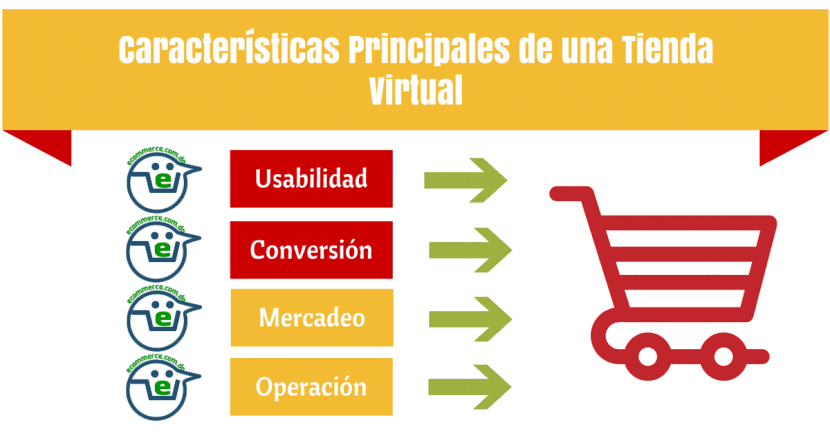

E-comerce
Autor:Yessica Alejandra Hernández Pérez
Caracteristicas
Ese tipo de sitio web generalmente tiene cuatro secciones:
- INFORMACIÓN INSTITUCIONAL: Esta sección intenta atraer a los clientes y generar un ambiente de confianza en la empresa.
- CATÁLOGO: Es un requisito fundamental del E-commerce y contiene la información detallada sobre los productos, sus beneficios y precios. De esta sección depende en gran parte el éxito del negocio.
- PROCESAMIENTO DE ÓRDENES: Esta sección incluye un método para especificar y configurar la orden. Los sistemas más avanzados pueden incluir sistemas de seguimiento de la orden.
- PASARELA DE PAGO: es el método utilizado para hacer la transacción económica. Existen varios métodos. En este apartado es muy importante dar seguridad al cliente y algún respaldo en caso de fraudes.

La mayoría de las empresas ya cuentan con presencia en Internet, por lo que se han preocupado es por desarrollar sitios institucionales. En estos casos, lo que se pretende es complementar algunas actividades tradicionales de Marketing como, por ejemplo, brindar información adicional y promocionar la compañía. Algunas hoy en día no han entrado en el mundo del marketing digital y no han entendido las grandes herramientas con las que se puede contar en Internet y el mundo de personas a las que se les puede llegar a través de la red.